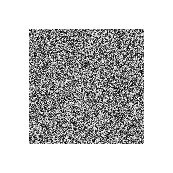
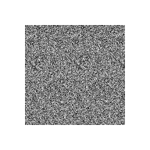
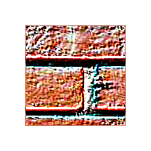
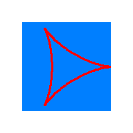
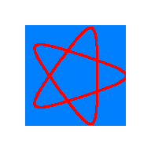
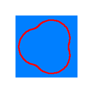
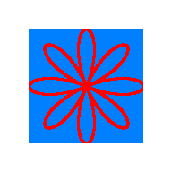
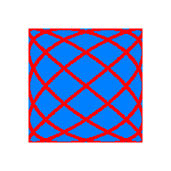

Textures
Table of Contents
It is really easy to create synthetic textures. There are two kinds of "texture filters":
- Rendering filters which are drawing new images
- Modification filters which are manipulating existing images
Renderer
Cell
Figure 1a. Default cells |
Figure 1b. Cells: cone + chess |
Figure 1c. Cells: cross + grid |
See Procedural::Cell
Cloud
Figure 2. Cloud
Gradient

Figure 3. Gradient
Image
Figure 4. Image
Labyrinth
Figure 5. Labyrinth
Marble

Figure 6. Marble
Noise

Figure 7a. White noise |

Figure 7b. Perlin noise |
Solid

Figure 8. Solid
Textile
Figure 9. Textile
Wood
Figure 10. Wood
See Procedural::Wood
Manipulation
Abnormals
Figure 1. Abnormals
Alpha
Figure 2. Alpha
AlphaMask
Figure 3. AlphaMask
Blit
Figure 4. Blit
See Procedural::Blit
Blur
Figure 5a. Blur: Mean | 
Figure 5b. Blur: Gauss |
See Procedural::Blur
Channel
Figure 6a. Channel: blue |
Figure 6b. Channel: gray |
CircleTexture
Figure 7. CircleTexture
Colours
Figure 8. Colours
Combine
Figure 9. Combine
Convolution

Figure 10. Convolution
Crack
Figure 11. Crack
Cycloid

Figure 12a. Cycloid: Hypocycloid |

Figure 12b. Cycloid: Hypotrochoid |

Figure 12c. Cycloid: Epicycloid |

Figure 12d. Cycloid: Epitrochoid |

Figure 12e. Cycloid: Rose curve |

Figure 12f. Cycloid: Lissajous curve |
Dilate
Figure 13. Dilate
Distort
Figure 14. Distort
EdgeDetection
Figure 15. EdgeDetection
EllipseTexture
Figure 16. EllipseTexture
See Procedural::EllipseTexture
Flip
Figure 17a. Flip: point |
Figure 17b. Flip: vertical |
Figure 17c. Flip: horizontal |
See Procedural::Flip
Glow
Figure 18. Glow
See Procedural::Glow
Invert
Figure 19. Invert
Jitter
Figure 20. Jitter
Lerp
Figure 21. Lerp
See Procedural::Lerp
Light

Figure 22. Light
See Procedural::Light
Lookup
Figure 23. Lookup
Normals
Figure 24. Normals
OilPaint
Figure 25. OilPaint
Polygon
Figure 16a. Polygon {3} |
Figure 16b. Polygon {5} |
Figure 16c. Polygon {6} |
RandomPixels
Figure 27. RandomPixels
RectangleTexture

Figure 28. RectangleTexture
See Procedural::RectangleTexture
RotationZoom
Figure 29. RotationZoom
Segment
Figure 30. Segment
Sharpen
Figure 31a. Sharpen: basic |
Figure 31b. Sharpen: gaussian |
TextTexture
Figure 32. TextTexture
See Procedural::TextTexture
Threshold
Figure 33. Threshold
Vortex
Figure 34. Vortex
Example
The Sample_Material project demonstrates how to use various texture generators and modifiers to build a texture, with it's associated normal map.
Here is a diagram of how the final texture is obtained: